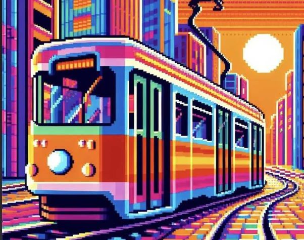

Luukku 8
Ratikat, tai raitiovaunut, ovat mielenkiintoinen liikennemuoto monissa kaupungeissa ympäri maailmaa. Niillä on oma viehätyksensä ja hyötyjensä, jotka voivat olla monipuolisia ja merkittäviä kaupunkiliikenteessä.
Yksi kiinnostava pohdinta liittyy ratikoiden vaikutukseen kaupunkien kehittymiseen ja kaupunkiympäristön suunnitteluun. Ratikat tarjoavat kestävän ja ympäristöystävällisen vaihtoehdon autoilulle, mikä voi auttaa vähentämään liikenteen aiheuttamia päästöjä ja ruuhkia.
Jos kiinnostuksesi ratikoita kohtaa heräsi, mene käymään ehdottomasti Helsingin kaupungin ratikkamuseossa. Opit siellä lisää mitä hämmästyttävämpiä ja tajunnanräjäyttäviä faktoja aiheesta!
Linkki museon nettisivuille tästä
